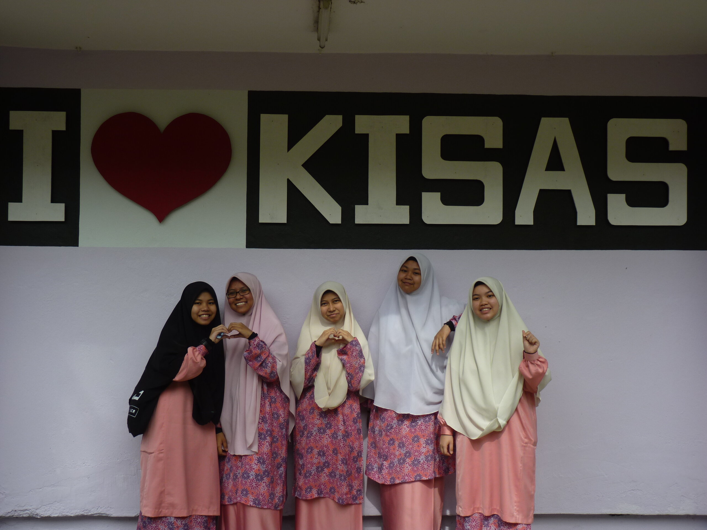
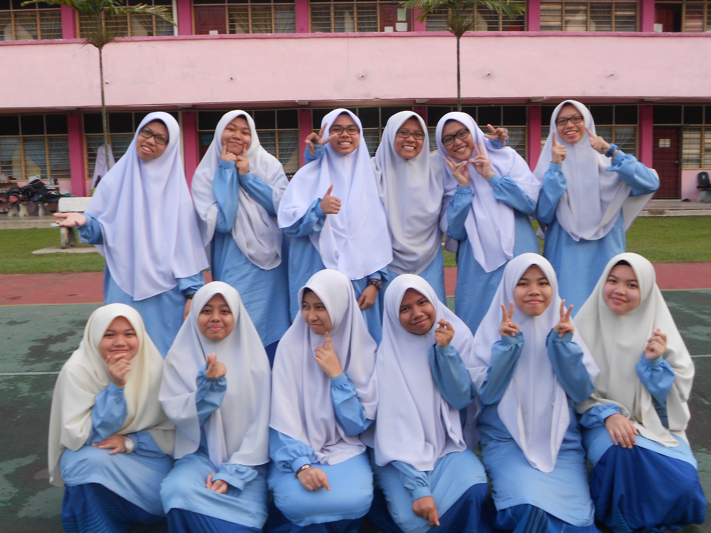

My School Friends
Most of my memories about school friends are about my friends in KISAS because the friendships built there was very impactful and leave strong impressions about friends to me. I think that is why I remember every events and scenes that I have shared with them. People might think I went to an all-girl schools because I only have pictures with girls but it is not true. It just because we rarely take pictures with the boys except for big events such as sports day, graduation and others. Nevertheless, I currently only have girls pictures because I have lost some photos, which makes me kind of sad.
As I have mentioned before, I was close with everyone in my batch. Well, there is a tradition where each of new students need to know everyone in the batch, which kind of "forcing" us to get along and learn atleast others' names and where they come from. So, each of us (we have 150 girls in our batch) has a notebook used specifically to write everyone's basic information and memorize it. The reason why we must memorize the information is because seniors from BADAR will conduct meetings frequently, specifically to point whoever they want to introduce not themselves, but others. During those time, everyone would secretly glance to their notebook as we afraid that our names will be picked. Remembering this memory made me believes tha the seniors want us to create communications between each others as we will spend a long time together. Eventhough there were some of us rebelling and hating this approach, at the end of the day we are very grateful that we were "forced" to getting along with one and another, that was the factor that keeping us connected until today.
Another reason why everyone knows me is because my mother teaches biology in the same school. But it was kind of awkward because I prefer to be someone unknown, not in the center of evveryone's attentions. However, it was a fun experience because I got to know then easier and faster as I am not originally a person who will approach people first.
 
These are my dormmates during at KISAS. The students were placed together according to our rumah sukan which are Khalid for blue, Omar for red, Ali for yellow and Thariq for green. I was in Khalid so my dormmates were all from Khalid as well. Most activities including co-curriculum participations were based on our rumah sukan. Hence, we were really close to each others as we spends most of the time together. Oh! We also had specific attire for night preparation classes which also according to the colour of rumah sukan and that was kind of interesting. Other than preparation class attire, all the girls also had similar baju kurung that we declared as our official attire for the batch (left photo).
Last but not least, this is the only photo with the boys that I still have in my gallery. I should ask other photos from my friends later on for future uses, perhaps. I was searching for group photo that has all boys and girls but it seems that I have deleted them unintentionally.Anyway, this photo was taken during the last gathering of my rumah sukan since everyone will be busy when SPM starts. We were barbeque-ing from evening until night, ate together, play some games and took photos as prove of memories. We skiped night preparation class for this event, luckily our princial, Ustaz Omar was so supportive and understanding so he gave permission for any students to conduct events like this. He said, we can do everything we wanted to do as long as we can perform in SPM later on. That is why he was being so linear to students wishes, especially when its getting near to big events such as SPM where we need to perform well.
Anyhow, there are lots of things that I want to share about my school friends but I will stop here. Otherwise, the entry will be too long and takes too much time to read.